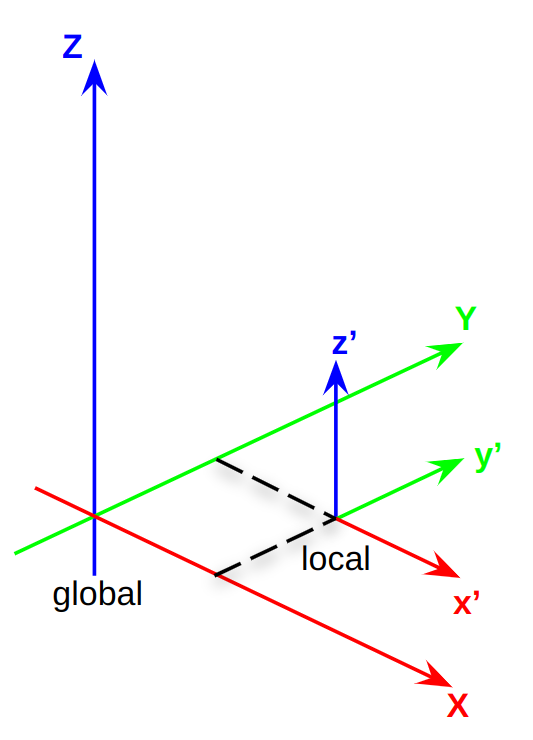
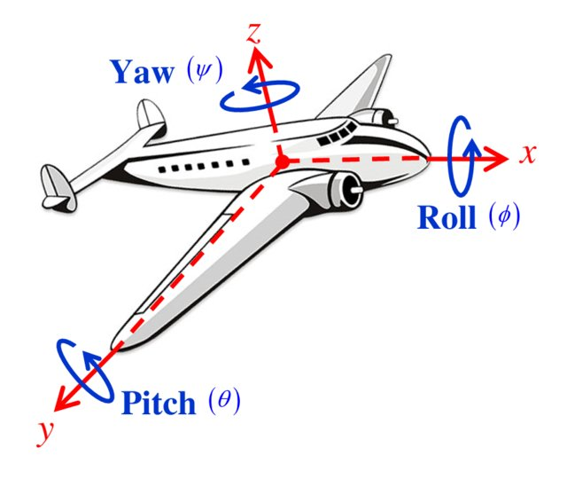

Entendendo a Odometria
Nesta atividade, vamos explorar o tópico de odometria, /odom, um dos mais importantes para a navegação de robôs móveis.
Odometria é a estimativa da posição e orientação de um robô móvel utilizando dados de sensores. Estes atributos são chamados de Pose, que é a posição e orientação do robô no espaço.
No caso do robô utilizado neste curso, a odometria é estimada utilizando os dados dos encoders dos motores.
Componentes da Pose
Posição
A posição é composta por três coordenadas, x, y e z. Existem dois sistemas de coordenadas que podem ser utilizados para representar a posição do robô:
-
Coordenadas globais: O sistema de coordenadas globais é fixo no mundo. A origem deste sistema de coordenadas é o ponto (0, 0, 0) do mundo.
-
Coordenadas locais: O sistema de coordenadas locais é fixo no robô. A origem deste sistema de coordenadas é o centro do robô.
Isso está ilustrado na figura abaixo:

Orientação
Orientação - Ângulos de Euler
A orientação de um objeto pode ser descrita através de ângulos de Euler. Trata-se de três ângulos que especificam a rotação do objeto em torno dos eixos XX, YY, e ZZ. Geralmente, rotações nos eixos XX, YY, e ZZ são chamadas de roll, pitch, e yaw, respectivamente, como mostrado na imagem abaixo.

Esse método é intuitivo, mas pode sofrer de gimbal lock (quando dois eixos se alinham e uma rotação efetiva é perdida).
Orientação - Quaternion
Uma alternativa aos ângulos de Euler é o uso de quaternions. Um quaternion é uma estrutura matemática que evita o problema de gimbal lock e é computacionalmente mais eficiente para algumas operações. Ele é representado como \(q=w+xi+yj+zkq=w+xi+yj+zk\).
Assista o vídeo abaixo para entender como funciona a representação de orientação usando quaternions.
Quaternions and 3d rotation, explained interactively
Tópico de Odometria
Agora veremos como a odometria é representada na ROS 2.
Vamos começar abrindo o simulador e o teleop através dos comandos, um em cada terminal:
-
abrir o simulador:
ros2 launch my_gazebo pista-23B.launch.py -
Teleop:
ros2 run turtlebot3_teleop teleop_keyboard
Antes de se inscrever em /odom, verifique o tipo e a estrutura da mensagem:
ros2 topic info /odom
O tipo é nav_msgs/msg/Odometry. Para ver o formato:
ros2 interface show nav_msgs/msg/Odometry
A mensagem é composta por:
-
pose.pose.position: A posição do robô no espaço. No caso do simulador, a origem do sistema de coordenadas é o centro da pista (encontro das linhas RGB - XYZ). No caso do robô real, a origem do sistema de coordenadas é estabelecida quando ele começa a se mover - portanto manualmente mover o robô, significa mover a origem do sistema de coordenadas. -
pose.pose.orientation: A orientação do robô no espaço. -
twist.twist.linear: A velocidade linear do robô no espaço. Aqui podemos ver um exemplo entre local e global. Por limitações de hardware, a velocidade linear local do robô só tem uma direção, para frente (eixo-X). No entanto, a velocidade linear global pode ter qualquer direção, no plano XY. -
twist.twist.angular: A velocidade angular do robô no espaço. Neste caso, a velocidade angular local e global são iguais, pois o robô só pode girar em torno do eixo Z.
Para inspecionar valores em tempo real, rode seu second_node:
ros2 run my_package second_node
agora, ande com o robô utilizando o teleop, para ver como a odometria é atualizada no terminal rodando o second_node.
Dica 1
Para ajudar na compreenção o sistemas de coordenadas, primeiramente ande com o robô em uma direção por vez, primeiro para frente, pare, gire 90 graus, ande novamente e monitore a atualização da odometria.
Robcomp Util
Primeiramente, clone o seguinte repositório dentro da pasta src (por enquanto, não tem nada dentro deste repositório):
Agora, dentro deste repositório, crie um novo pacote chamado robcomp_util com as seguintes dependências:
ros2 pkg create --build-type ament_python robcomp_util --dependencies rclpy std_msgs geometry_msgs sensor_msgs
Agora, vamos encapsular a odometria em uma classe que pode ser facilmente importado e herdada em qualquer nó na ROS 2.
Módulo de Odometria - APS 3
Baseando-se no second_node, dentro do pacote robcomp_util, crie um arquivo denominado odom.py, mude o nome da classe de SecondNode para Odom e siga os seguintes passos:
- Remova a herança de
Nodeda classeOdome a inicialização do nó,super().__init__('second_node').
Info
Estamos removendo a herança para que você possa reutilizar a classe em qualquer nó, criando um módulo, o que não seria possível se Odom herda-se de Node.
-
Remova a função
control()da classeOdome o timer que chama essa função. -
Remova a função
main()e a condiçãoif __name__ == '__main__':. -
Definir um subscriber para o tópico
odomque chama a funçãoodom_callbackquando uma mensagem é recebida. -
Depois adicione a seguinte linha no final do construtor
__init__para processar as mensagens recebidas pela primeira vez:
rclpy.spin_once(self)
-
Definir uma função
odom_callbackque recebe uma mensagem do tiponav_msgs/msg/Odometrye armazena os seguintes parâmetros:-
self.x: posição X do robô no espaço global. -
self.y: posição Y do robô no espaço global. -
self.yaw: orientação do robô no espaço global. Valor em radianos e no intervalo de-piapi.
-
Para auxiliar, enviamos uma função que faz conversão de quaternion para ângulos de Euler, que deve ser adicionada a classe Odom e chamada na função odom_callback, note que a função recebe um objeto orientation do tipo Quaternion.
def euler_from_quaternion(self, orientation):
"""Converte quaternion (formato [x, y, z, w]) para roll, pitch, yaw."""
x = orientation.x
y = orientation.y
z = orientation.z
w = orientation.w
sinr_cosp = 2 * (w * x + y * z)
cosr_cosp = 1 - 2 * (x * x + y * y)
roll = np.arctan2(sinr_cosp, cosr_cosp)
sinp = 2 * (w * y - z * x)
pitch = np.arcsin(sinp)
siny_cosp = 2 * (w * z + x * y)
cosy_cosp = 1 - 2 * (y * y + z * z)
yaw = np.arctan2(siny_cosp, cosy_cosp)
return roll, pitch, yaw
Testando
Para testar o módulo que criamos, baseado-se no arquivo base.py crie um arquivo chamado test_odom.py, dentro do pacote robcomp_util. Este arquivo deve conter um nó chamado test_odom_node que importa a classe Odom do arquivo odom.py e imprime a posição e orientação do robô no espaço global a cada 1 segundo.
Você deve:
-
Importar a classe
Odomdo pacoterobcomp_utilda seguinte forma:from robcomp_util.odom import Odom -
Fazer a herança da classe
Odomnotest_odom_node, mantendo a herança deNode, ou seja, faça a herança múltipla:class TestOdomNode(Node, Odom): -
Inicializar ambas as classes no construtor
__init__()dotest_odom_node:super().__init__('test_odom_node') Odom.__init__(self) -
Modifique a função
control()do arquivobase.pypara imprimir a posição e orientação do robô (self.x,self.y,self.yaw) a cada 0.25 segundo. -
Adicionar o nó no arquivo
setup.pye então compile o pacote. -
Rode o nó
test_odom_nodeutilizando o comandoros2 run robcomp_util test_odome mova o robô utilizando o teleop, para ver como a odometria é atualizada.